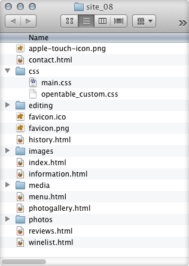
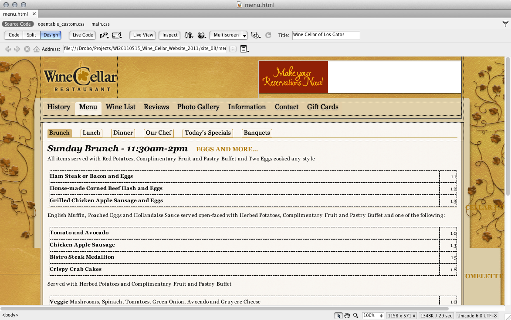
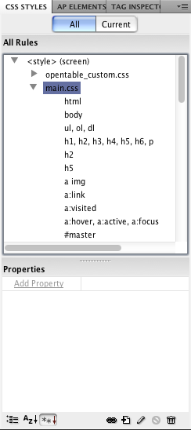
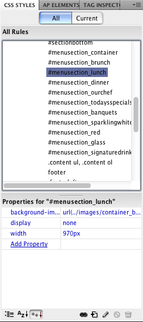
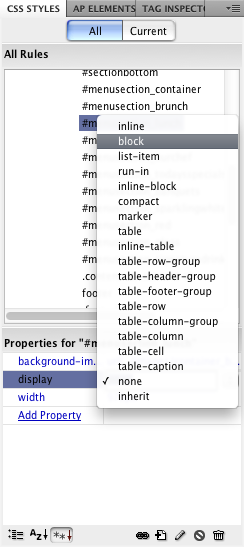
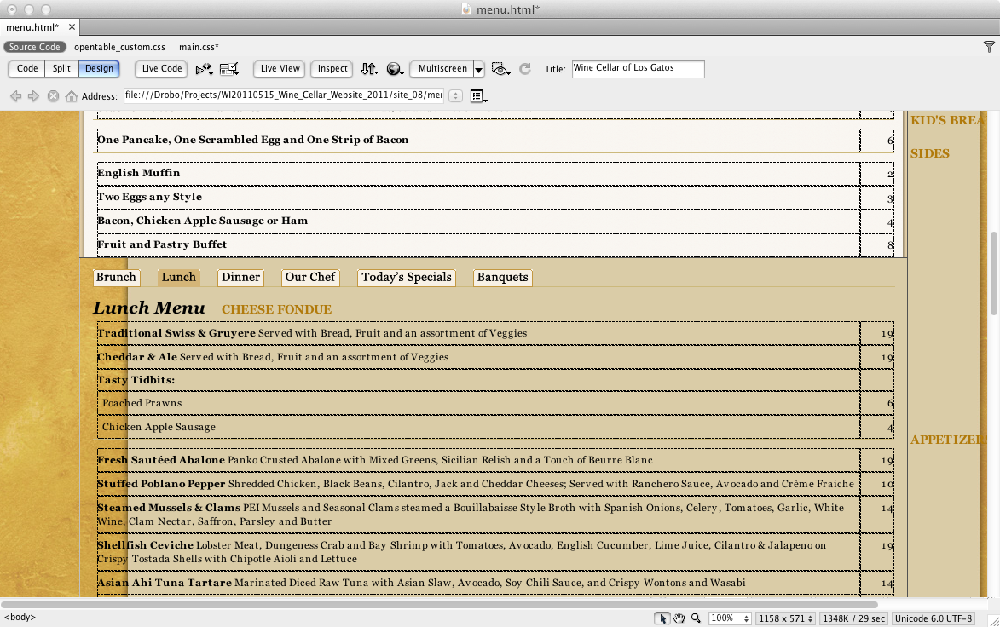
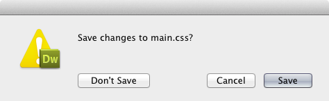

How to Edit the Menu Pages
This is a quick and dirty tutorial that you can use to edit the "menu" and "wine list" pages on the winecellarlosgatos.com website. I made this page on my Mac using Mac OS X 10.7 Lion, and Dreamweaver CS5. The windows might look a bit different depending on your version of Dreamweaver and your OS, but the tools are all the same.
To begin, you will need:
- A copy of Dreamweaver CS3 or later
- An internet connection
- A "site" connection already established in Dreamweaver
A "site" connection is a connection that Dreamweaver makes to your webserver so that when you make changes, they appear instantly on your website. Otherwise you are just making changes to documents on your own computer, and the website never gets changed. You typically only need to set this up once, and then it will work as long as your computer is connected to the internet.
How does it work?
The Menu pages (menu.html) and the Wine List (winelist.html) both have the same requirements. They need to show multiple sets of menu information in the same place. To accomplish this, I placed all the menu sets on each page on top of each other at once, and I added buttons (the sub-navigation tabs) that make specific menus visible and invisible depending on which one is clicked on.
Menu Sets:
- Brunch
- Lunch
- Dinner
- Our Chef
- Today's Specials
- Banquets
Wine List Sets:
- White Wines
- Red Wines
- By The Glass
- Signature Drinks
The items in red are initially visible (they have their "display" property set to "block" by default). The black items are hidden (they have their "display" property set to "none" by default). I will be showing you how to change that property so that the individual menus are visible, as they need to be so that you can edit them.
Making an Edit
The site's files are listed like you see here in this window ------->
The HTML documents are easy to spot. They contain the actual content that you see on the pages when you visit them using a web browser.
The CSS documents are located in the CSS folder. They contain formatting data that applies ot the HTML documents. Each HTML document references one or more CSS documents, and looks inside of them for formatting data (what font to use, how big it should be, what's underlined and what's not, and which elements on each page are visible or invisible). After you have your site set up and you have opened your "menu" or "wine list" page (or both), your main window will look something like this:
The section headers (Omelette or Scramble, From the Griddle, etc...) appear on the right side of the content in the margin area, but don't worry, they look normal when the page is open in a browser. Dreamweaver's "CSS Styles" palette will most likely be on the right side of the screen when the application is open. If you cannot find it, look under the "Window" menu, and select "CSS Styles". The proper palette should appear ----->
You will want to collapse the "opentable_custom.css" list by clicking on the small triangle arrow next to its title. After that, the "main.css" list should be visible under it. The "main.css" list is where we will be making our content visible so that we can edit it.
Scroll down to the "#menusection" area of the list. These are the different sections of the menu, some of which are initially hidden from view. We need to make them visible in order to edit them. You can see the various menus listed, one menusection for each menu. When you click on one of them, you can see that its properties appear in the frame below the list. This is where you edit the item's properties.
Remember - the formatting content that exists in this list is NOT located in your HTML document. It lives inside the "CSS" folder and applies to all pages at once.
The "#menusection_brunch" and "#menusection_sparklingwhite" items in the CSS Styles list are set to be "display: block". This means that their initial display setting is visible, not hidden. The reason that these 2 items are initially visible is because they are the first tabs on their respective web pages, and so they should be available to read. If you click on other tabs, the page automatically makes these invisible and makes the other appropriate menu visible.
This happens every time you click on a tab on the menu and wine list pages. They make specific menu lists visible and invisible, replacing each other dynamically.
Why is this important? Well, it isn't really very important to you, except for that you need the individual menus to be visible in Dreamweaver if you want to edit their content.
In order to make a specific menu visible, do this:
- Select the CSS style that you want to edit
- Click on the "none" Property -------->
- Select "block" form the resulting menu
Your content should now be visible in the editing window. You may need to scroll down to see it, as it may appear after existing content. Don't worry about that as it will not prevent you from being able to edit the page's content.
Repeat the steps above, changing different sections to "block" in order to edit them. As you make them visible, you will be able to see their content and you can make edits. Then you will want to save your work and close the window.Remember when I said that the CSS Styles formatting content does NOT reference your HTML file? Well, it DOES reference a different folder, and we just made changes to documents in that folder when we were switching the sections from "none" to "block".
Since we want to make sure those CSS files don't get messed up, we need to be sure not to save the changes we made to it. We ONLY want to save the changes to the HTML documents.
When you are closing your documents after an edit, you will most likely see the "Save Changes" dialog box for main.css. Make sure you click "Don't Save". That will ensure that your alterations to the sections' visibility settings do not carry over to the actual website. I hope this all makes sense.
:)